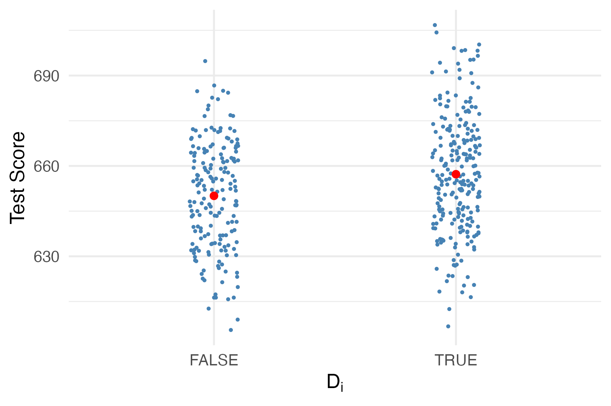

# load packages and dataset
pkgs <- c("tidyverse", "moments", "data.table", "ggsci", "stargazer")
missing <- setdiff(pkgs, rownames(installed.packages()))
if (length(missing) > 0) install.packages(missing)
invisible(lapply(pkgs, function(pkg) suppressPackageStartupMessages(library(pkg, character.only = TRUE))))Lab 2: Regression with Dummy Variables
In this lab, we will run regressions with dummy variables (also known as binary variables or indicator variables).
🎯 In this script, you will learn how to:
- Load data from a local CSV file
- Create dummy variables from a numeric variable
- Run a regression with dummy variables
- Interpret the regression results
1 Instructions
Copy and paste ALL code in this notebook into a new R script file in RStudio. Save the file as lab2_binary_variables.R (we call it a script). Then, run the code step by step, answering the questions.
2 Load data into working directory
We continue to use the same dataset California school dataset (CASchools). Refer to Data Visualization: Dataset Overview for detailed description of the dataset.
Previously, we loaded the data directly from an online data repository. Now, we will load the data from a local CSV file.
Downloaded the CASchools_test_score.csv file from Canvas and placed it in the same folder as where you put lab2_binary_variables.R. This is to make sure that the script can find the data file.
# load dataset
f_name <- "CASchools_test_score.csv"
cas <- read_csv(f_name)
# data preview, first and last 5 rows
cas %>% as.data.table() %>% print(topn = 5) district school county grades students
<num> <char> <char> <char> <num>
1: 75119 Sunol Glen Unified Alameda KK-08 195
2: 61499 Manzanita Elementary Butte KK-08 240
3: 61549 Thermalito Union Elementary Butte KK-08 1550
4: 61457 Golden Feather Union Elementary Butte KK-08 243
5: 61523 Palermo Union Elementary Butte KK-08 1335
---
416: 68957 Las Lomitas Elementary San Mateo KK-08 984
417: 69518 Los Altos Elementary Santa Clara KK-08 3724
418: 72611 Somis Union Elementary Ventura KK-08 441
419: 72744 Plumas Elementary Yuba KK-08 101
420: 72751 Wheatland Elementary Yuba KK-08 1778
teachers calworks lunch computer expenditure income english read
<num> <num> <num> <num> <num> <num> <num> <num>
1: 10.90 0.5102 2.0408 67 6384.911 22.690001 0.000000 691.6
2: 11.15 15.4167 47.9167 101 5099.381 9.824000 4.583333 660.5
3: 82.90 55.0323 76.3226 169 5501.955 8.978000 30.000002 636.3
4: 14.00 36.4754 77.0492 85 7101.831 8.978000 0.000000 651.9
5: 71.50 33.1086 78.4270 171 5235.988 9.080333 13.857677 641.8
---
416: 59.73 0.1016 3.5569 195 7290.339 28.716999 5.995935 700.9
417: 208.48 1.0741 1.5038 721 5741.463 41.734108 4.726101 704.0
418: 20.15 3.5635 37.1938 45 4402.832 23.733000 24.263039 648.3
419: 5.00 11.8812 59.4059 14 4776.336 9.952000 2.970297 667.9
420: 93.40 6.9235 47.5712 313 5993.393 12.502000 5.005624 660.5
math
<num>
1: 690.0
2: 661.9
3: 650.9
4: 643.5
5: 639.9
---
416: 707.7
417: 709.5
418: 641.7
419: 676.5
420: 651.0Prepare dataset for analysis.
As done previously, we create the following variables:
TestScore: average test score of students in a school (average of math and reading scores)str: student-teacher ratio
cas <- cas %>%
mutate(
TestScore = (read + math) / 2,
STR = students / teachers
)3 Regression When \(X\) is a Binary Variable
Instead of using a continuous regressor \(X\) , we might be interested in running the regression
\[ Y_i = \beta_0 + \beta_1 D_i + u_i, \tag{1}\]
where \(D_i\) is a binary variable, a so-called dummary variable. For example, we may defined \(D_i\) as follows:
\[ D_i = \begin{cases} 1 & \text{if $STR$ in $i^{th}$ school district < 20} \\ 0 & \text{if $STR$ in $i^{th}$ school district $\geq$ 20}. \end{cases} \tag{2}\]
The regression model now is
\[ TestScore_i = \beta_0 + \beta_1 D_i + u_i. \]
3.1 Data Visualization
# Create the dummy variable as defined above
# D=1 (low STR); D=0 (high STR)
cas$D <- cas$STR < 20ggplot(cas, aes(x = factor(D), y = TestScore)) +
# scatter points, spreads the points horizontally so they don't overlap
geom_jitter(width = 0.1, height = 0, size = 0.5, color = "steelblue") +
geom_point(
data = means, aes(x = factor(D), y = TestScore),
color = "red", size = 2
) + # group means
labs(
x = expression(D[i]),
y = "Test Score",
) +
theme_minimal(base_size = 14)
# Compute group means
means <- aggregate(TestScore ~ D, data = cas, mean)
means| D | TestScore |
|---|---|
| <lgl> | <dbl> |
| FALSE | 650.0768 |
| TRUE | 657.2462 |
We see that small size class has higher average test score.
3.2 Regression with a Binary Variable
With \(D\) as the regressor, it is not useful to think of \(\beta_1\) as a slope parameter since since \(D_i \in \{0,1\},\) i.e., we only observe two discrete values instead of a continuum of regressor values. There is no continuous line depicting the conditional expectation function \(E(TestScore_i | D_i)\) since this function is solely defined for \(x\)-positions \(D_i = 0\) and \(D_i = 1\).
Therefore, the interpretation of the coefficients in this regression model is as follows:
- \(E(Y_i | D_i = 0) = \beta_0\), so \(\beta_0\) is the expected test score in districts where \(D_i = 0\) and \(STR\) is larger or equal to 20.
- \(E(Y_i | D_i = 1) = \beta_0 + \beta_1\), or \(\beta_1 = E(Y_i | D_i = 1) - E(Y_i | D_i = 0).\) Thus, \(\beta_1\) is the difference in group-specific expectations, i.e., the difference in expected test score between districts with \(STR<20\) and those with \(STR \geq 20.\)
We now estimate the dummary regression model as defined by Equations (1) and (2).
dummy_model_slr <- lm(TestScore ~ D, data = cas)
stargazer(dummy_model_slr, type = "text", title = "Dummy Variable Regression Results", digits = 3)💡 Q: Based on the regression output, answer the following questions:
- What is the average test score in school districts with \(STR \geq 20\)?
- What is the average test score in school districts with \(STR < 20\)?
- What is the difference in average test score between school districts with \(STR < 20\) and those with \(STR \geq 20\)?
- Is the difference statistically significant at the 5% significance level?
4 MLR with a Binary Variable
dummy_model_mlr <- lm(TestScore ~ computer + english + lunch + D, data = cas)
stargazer(dummy_model, dummy_model_mlr,
type = "text",
title = "Regression Results",
digits = 3
)💡 Q: Comparing the regression results of the simple regression with a binary variable and the multiple regression with additional control variables, answer the following questions:
- How does the coefficient of the binary variable change when we add more control variables?
- Why does the estimated effect of small classes shrink when other control variables are included?
- Does the smaller coefficient in the multiple linear regression model mean small classes are unimportant, or does it mean we now have a less biased estimate of their effect? Explain.